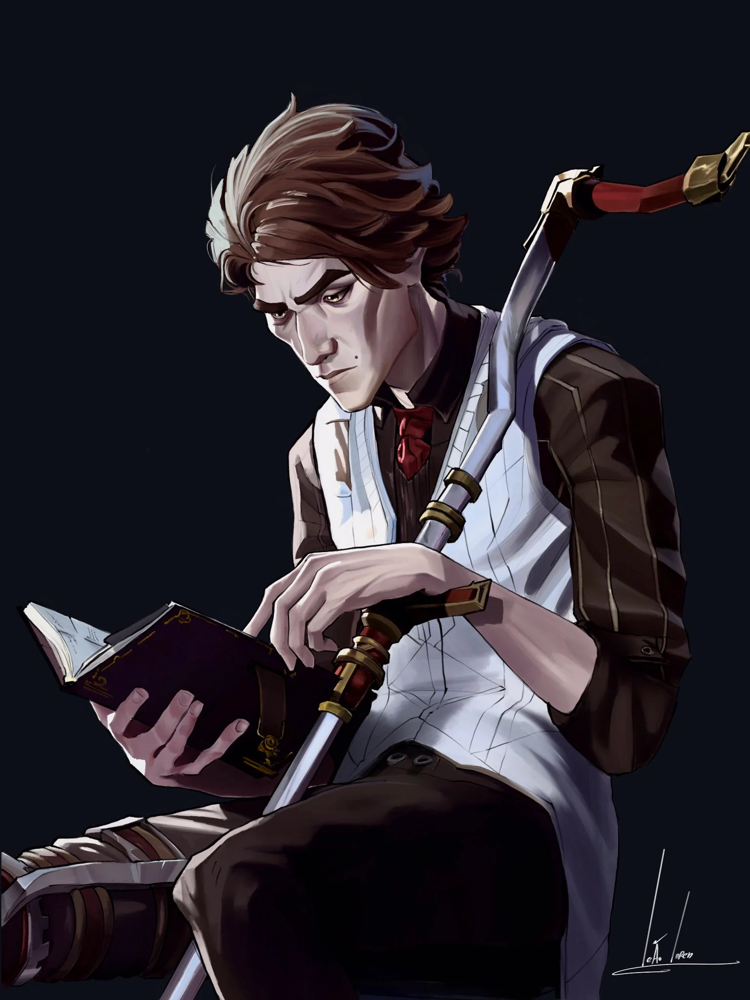

Como tudo começou:
A história da Evolução do mundo pela tecnologia, começa por aquilo
que molda o mundo, aquilo que faz o mundo, o amor.
Nosso fundador, Viktor. (Figura 1)

Figura 1
Foi um dos maiores cientistas que
já pisou no mundo, o mesmo sempre foi focado nos estudos, porém sem
direcionamento, tinha vontade e força, mas não sabia qual caminho tomar.
Um dia, ele foi chamado para assistir uma palestra sobre o futuro da ciência,
ministrada por um inventor que recentemente tinha alcançado os pilares da academia,
um jovem membro da casa Tails. Ele rapidamente ficou encantado com sua genialidade,
porém tinha algo que o incomodava, o jovem tinha algo que Viktor não compreendia:
a determinação de ajudar e salvar o mundo.
Viktor se aproximou do jovem, trabalhou com o mesmo em inúmeros projetos da
academia, e aos poucos sua vontade de mudar o mundo, de evoluir foi crescendo,
e com isso algo inesperado foi surgindo, algo entre uma irmandade e um amor.
Viktor e o jovem da casa Tails se tornaram inseparáveis, com diversos projetos
e trabalhos com feitos inimagináveis, até que um dia eles chegaram a um impasse.
Em um projeto que abordava como os jovens parceiros iriam decidir o futuro de
uma periferia para construir um novo centro de distribuição, eles chegaram a um
impasse. Viktor queria focar em tecnologia, ser eficiente. Enquanto o jovem Tails foi
vendo seu amigo se confundir e se perder, ele percebeu que aquilo era algo que não
iria dar certo, e então ele seguiu em frente e desistiu da parceria e do projeto.
O jovem da Casa Tails fugiu e se isolou, a fim de fugir da maldade e egoísmo da humanidade,
enquanto Viktor se tornou alguém com uma sede de conhecimento impecável, empenhado em
mostrar ao seu colega que ele estava errado, que a tecnologia transpassava a espécie humana,
e que eles deveriam focar em coisas eternas, e não em um simples projeto.
Viktor sentia muita saudade do seu querido amigo, então ao decidir procurar o mesmo,
ele descobriu que ele havia sumido e que por culpa do seu egoísmo com a humanidade,
ele perdeu aquilo que o completava. Empenhado em mostrar que mudou, decidiu transformar
o mundo inteiro em um lugar melhor, assim para retomar seu querido, ele fundou a Viktor.Ltda,
e logo nasceu a ViktorTransportes, sua principal empresa que de todo o Grupo Viktor, é
a com maior lucro, menor custo e mais eficiente.
A grande chave responsável pela solução de transporte da ViktorTransportes são os Portais Hextech,
essa tecnologia foi a grande chave que fez a vida de Viktor mudar. Usando o seu grande trunfo,
a Gema Hextech, uma joia que o mesmo desenvolveu com o jovem Tails, uma joia embutida de magia
capaz de gerar uma energia mágica, com alto desenvolvimento o mesmo desenvolveu os Portais Hex.
Nosso fundador sempre foi um homem da ciência, e hoje, ele luta para que todos possam ter acesso
à grande evolução tecnológica, e que todos possam ter acesso a um transporte seguro, eficiente e
puro, assim como ele sempre sonhou. A Tecnologia Hex é algo que ele trabalhou com muita dedicação,
comum que para outras empresas mais antigas, usem muitas tecnologias que fazem mal ao planeta, não é
o caso da ViktorTransportes, que sempre focou em tecnologias limpas e eficientes.
A ViktorTransportes é atualmente responsável por 70% do transporte de cargas de Piltover e Zaun, e tem
mostrado altos índices de crescimento no exterior, com nossas novas tecnologias, esperamos trazer
a
Gloriosa Evolução
para todos os lugares, e que todos possam ter acesso a uma vida boa e segura.